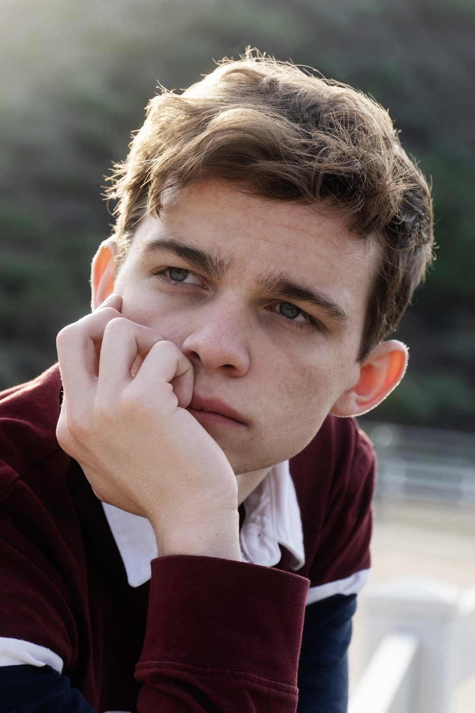

videos/ and update the <source> tag in this file
Stills

One of my favorite stills from NOON. We were able to motivate light coming from the ladder exit above the subject, which bounced around in the darkness below to provide a minimal but necessary fill.